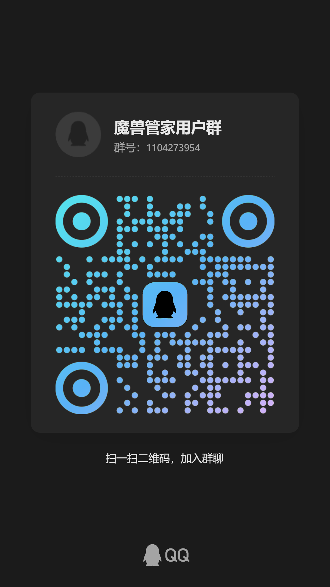

魔兽管家WoW Butler

魔兽管家用户群
扫码或搜群号加入，反馈问题/建议
 查询中
查询中
公会战报
公会资料
公会介绍
装备分配制度
角色认领
公会信息
- 所属服务器
- 公会 ID
- 邀请码
WCL 公会主页
尚未绑定 WCL 公会。
绑定公会
绑定后可在考勤页查找该公会的报告。
公会招募卡
仅本公会成员可见，含招募联系方式。
公会成员
个人档案
个人档案
登录后可查看自己的角色与认领记录。
我的角色
所属公会
个人档案
我的角色
仅本人可见
个人档案
我的认领
仅本人可见
公会团队管理
考勤、装备、心愿单——团长每晚的行政工作，十分钟打完
家宅
2062 件家宅装饰全量目录，来源筛选一键到位
① 建立名单与认领角色 · 团队管理怎么用
团队成员
管理所有团队成员信息
| # | 角色名 | 公会身份 | 服务器 | 职业 | 专精 | 职责 | 状态 | 加入日期 | 出勤率 | 操作 |
|---|
② 核对本场活动与考勤 · 团队管理怎么用
考勤记录
查看和管理所有团本活动考勤
日历视图
列表视图
③ 确认装备最终去向 · 团队管理怎么用
- 在「拾取记录」导入插件数据，核对每件装备；没有当天考勤活动也可以先继续。
- 已核对的单件点击「转分配」，装备资料自动带入。尚未决定给谁时，保存为「待分配」。
- 确认最终获得者后保存为「已分配」。拾取人可能只是代拿，不会自动作为获得者；活动可在分配表单中稍后补关联。
装备分配
管理团本装备掉落与分配记录
分配记录
拾取记录
| 装备名称 | 装等 | 心愿 | 所属团本 | 掉落难度 | 掉落BOSS | 装备部位 | 主属性 | 副属性 | 分配给谁 | 分配状态 | 分配方式 | 点数 | 活动日期 | 操作 |
|---|
心愿单
管理团员的装备需求与获取进度
| 装备名称 | 所属团本 | 掉落BOSS | 装备部位 | 需求成员 | 优先级 | 专精 | 状态 | 操作 |
|---|
当前公会角色没有查看团队统计的权限。
统计报表
团队出勤数据分析
出勤率 Top10
出勤趋势（最近10次）
出勤率排名
| 排名 | 角色名 | 职业 | 出席 | 替补 | 缺席 | 迟到 | 请假 | 出勤率 |
|---|
缺席榜 Top5
数据管理
数据导入导出与备份
☁ 云端同步状态
当前数据已自动同步到云端，所有公会成员共享同一份数据，无需手动备份。
✅
数据已云端同步
💾 本地 JSON 备份/迁移
仅作为数据备份或跨环境迁移使用，不参与日常 CRUD 实时数据流。
含团员关系或团员考勤的备份目前仅支持导出留存，恢复入口尚未开放。
魔兽管家
更新日志
当前版本 · 最近更新
版本记录
记录每一次功能迭代与优化
🗄 数据中心
游戏字典主数据维护（全公会只读，仅产品超管可写）
版本
赛季
团本
BOSS
掉落池
大秘境掉落
套装
大秘境
职业
专精
访问统计
国服排行榜
大秘境可按服务器和地下城查队伍成绩。PvP 可按竞技场、评级战场、单排轮斗等赛制查看玩家排名。
国服正式服
数据加载中…
公会事务与游戏图鉴
魔兽管家
管理公会成员、考勤与装备，也可以直接浏览副本掉落和家宅装饰。
时光徽章 国服正式服
— 金币 / 枚
近期走势
每 5 分钟采样
🔒 登录并加入公会后可用
⚔️ 加入公会，解锁团队管理
考勤记录、装备分配、心愿单、成员管理、统计报表等团队功能，需登录并加入公会后使用。
登录后可加入或创建公会
团员请向会长索取 8 位邀请码
或者